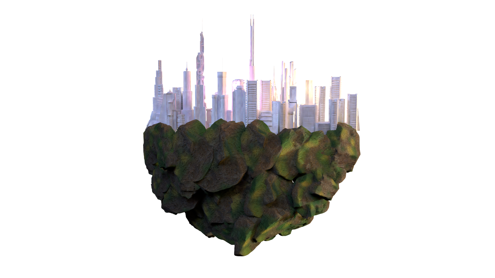
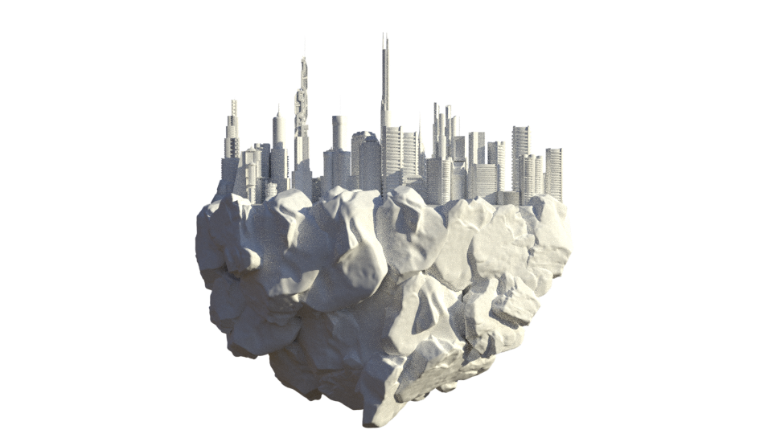
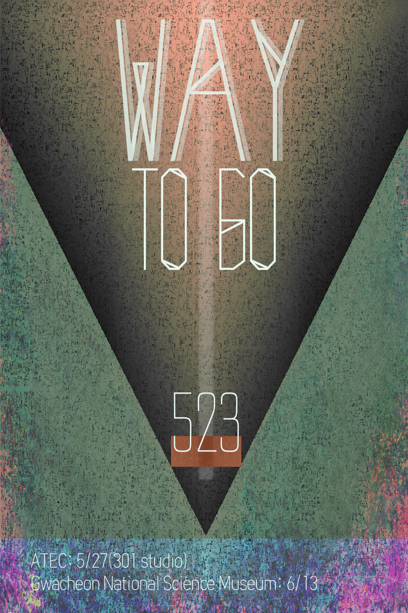

Teum
I was raised by my father who is Korean based on traditional drawing.
As times changed, I felt a shame for the loss of traditional drawing with beautiful techniques due to various situations, so I decided to use my major to create a new media art that mix modern technology with past paintings. And the first project was Teum.
Intention:
I would break through a recognition people have what is Korean drawing is outdated by using modern technologies and vibes, Korea’s new form digital art is my goal.
objective:
The traits of the art
At the Artec rehearsal, we created an interface that was a process-reconstructed landscape painting. As you move your hands along the interface, the images are played according to the sensitivity and the pitch of the song is configured to change.
The reason why I used the modeling video is that when modern people touch on modern technology reconstructed paintings, considering that Korean landscape ink drawing can no longer show the landscape of Korea, they wanted the modern city to be mapped between the paintings of the past. In other words, with the participation of the audience, we tried to melt the modern landscape into the past. But I want to focus more on the paintings, so I will remove the video and focus on the changes in sound and lighting during the Namsan exhibition.

Blossom
When I was interning at LaMama E.T.C, New York City, Billy, my boss, made me think of the DMZ (Demilitarized Zone) anew - the DMZ as an impossibility between you and me. It's not just a cease fire line.
So We performed various special projects about Korea’s political agenda, the DMZ.
For my part, I made a media performance with my friends, Anna & Namhae.
I wanted to make something meaningful metaphor storyboard.
This is my storyboard.
Our first idea was to see the DMZ as an impossible line to cross.
So we considered the screen as an impossible zone to cross between people.
I wanted to use a light bulb to signify hope.
Light bulbs need a filament. Thus I used a person, the main character as filament.
The main character, who doesn't know what's inside the screen, is curious about the sound coming from the screen which says, “Can you hear me?”
But when, out of curiosity, she goes behind the screen, she get trapped in the bulb. She feels that the surface of the light bulb is an impossible zone to cross - DMZ.
Finally, she realizes that the DMZ is in her mind and decides to shine the light to the world through herself rather than to escape from the bulb.
So she accepted the situation and solved the problem through the light.
That’s the story about “Blossom”.
It’s a play so I can’t show you everything.
The way to go

3 road ray on the bottom,
So people can walk away
when participate decided one way, they have showing each meaning of the way.
It was made with Arduino, Max/msp, Ableton Live, Resolume, Logic pro X.
These are of realized images.
Also you can watch others on my youtube channel.